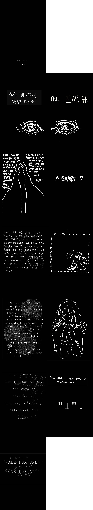

ART121 Zine project
I had a lot of fun finding and creating material to incorporate into this zine project. The topic I wanted to explore revolves around the oppression of assimilation, especially in dystopian or totalitarian societies where personality is hindered, group mentality is forced, and individuality ceases to be. As I was growing up, I found myself extremely intrigued by the fascinations of dystopian societies and how different life and culture ends up becoming in these kinds of living guidelines. I was interested in the paradise cycle that a character undergoes as they come to terms with and the horrors of extreme conformity, and struggle to regain or acquire their individuality to break free from the pattern. In this zine, I have included text from multiple sources, from different songs and novels that particularly resonated with my topic. There are lines from “2112”, Rush’s 20 minute song from their concept album, which delves into the mind of a man who tries to rediscover creativity from a world that existed before dictators began to rule over the planet, ridding society of music and elements of culture that make people unique. Another Rush song, “Farewell to Kings”, is included, which also revolves around a overbearing ruler. Finally, I included excerpts from Ayn Rand’s “Anthem”, which has stuck with me very strongly for many years. I fell in love with the way an extremely assimilated society was portrayed, in how the only pronouns are “we” and “they”, in both reference to oneself, another, or multiple people, and how the main character finally escapes this entrapment, and is flooded with knowledge from a world with richness and culture.
This project introduced the software Adobe InDesign, which I found interesting to use, as I enjoyed the ease of auto formatting when trying to print spreads in a booklet form. From what I have experienced so far, InDesign has not been my favorite software, as a lot of actions, options, and maneuverability are rather non-intuitive. For example, I struggled with image alignment, as I found the image moving options confusing and unhelpful at times. Also, there are a lot of options that can’t be changed to become a preset for all future documents; they have to be set every time a new project is created. Or, there are options like image resolution or display quality that must be individually set for each picture and can’t be set for all images at once, which is non-intuitive. Otherwise, with practice, InDesign can be a very helpful tool to create layouts for advertisements, posters, and booklets. I explored placement of text and images together, as well as page layout, printing options, margin setting, and image alignment.